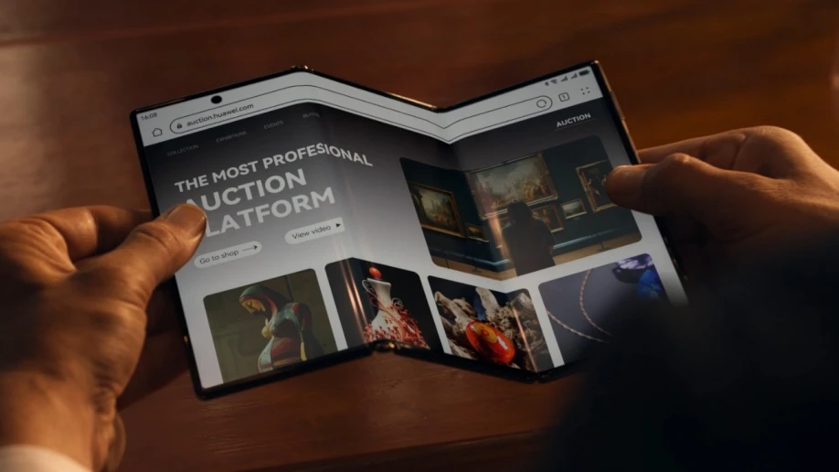
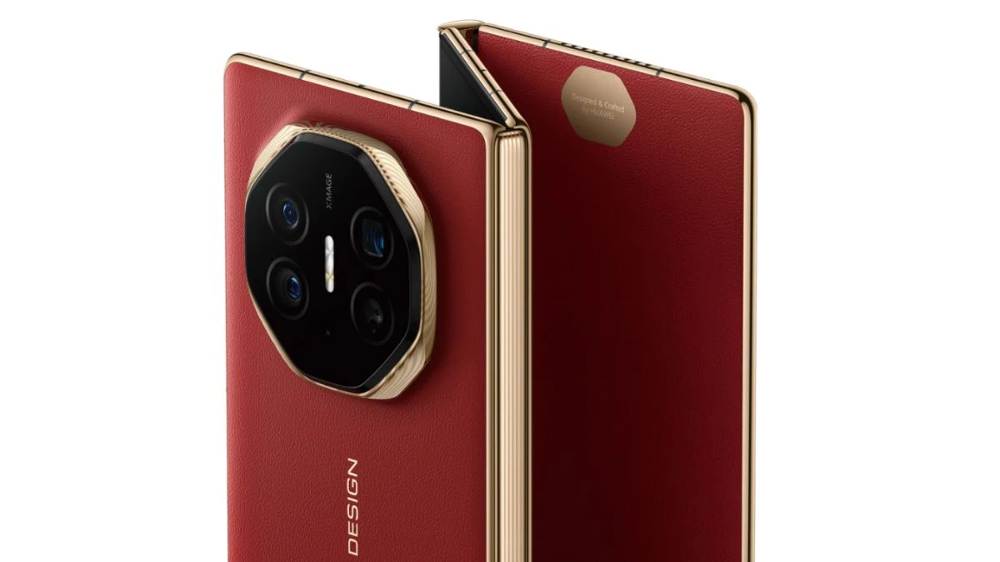

Spesifikasi Huawei Mate XT
Secara spesifik, Mate XT Ultimate memiliki layar 6,4 inci beresolusi Full HD+ dalam keadaan tertutup. Ketika dibuka setengah, layarnya menjadi 7,9 inci dengan resolusi 2K, dan ketika dibuka sepenuhnya, perangkat ini menampilkan layar 10,2 inci beresolusi 3K, setara dengan ukuran tablet.
Yang membuatnya menarik adalah meskipun memiliki layar besar, ketebalan Huawei Mate XT Ultimate hanya 3,6 mm saat dibuka sepenuhnya, sangat tipis untuk kategori smartphone lipat. Dalam kondisi tertutup, ketebalannya mencapai 12,8 mm, sedikit lebih tebal dibandingkan Samsung Galaxy Z Fold6 yang memiliki ketebalan 12,1 mm.

Smartphone ini memiliki bobot 298 gram. Dengan ukuran layar yang besar dan dapat dilipat, ada kekhawatiran mengenai daya tahannya. Namun, Huawei mengklaim bahwa Mate XT Ultimate memiliki ketahanan lipatan hingga 25% lebih baik dibandingkan perangkat lipat lainnya.
Huawei tidak memberikan detail mengenai chipset yang digunakan. Berdasarkan rumor, Mate XT Ultimate menggunakan Kirin 9000 seperti pada Pura 70 Series, dengan dukungan RAM hingga 16GB dan penyimpanan internal hingga 1TB

Untuk sektor kamera, Mate XT Ultimate dilengkapi sensor utama 50MP dengan variabel aperture (f/1.4 – f/4.0), sensor ultra-wide 12MP, dan telefoto periskop 12MP di bagian belakang. Di bagian depan, terdapat kamera 8MP untuk kebutuhan selfie dan video call dengan desain punch-hole.
Meskipun memiliki desain engsel yang kompleks dan konsep layar lipat tiga, Huawei berhasil menyematkan baterai berkapasitas 5.600mAh. Baterai ini menggunakan teknologi carbon yang diklaim sebagai yang tertipis di dunia, mendukung fast charging 66W wired dan 50W wireless charging.
Huawei juga memperkenalkan keyboard wireless yang dapat dilipat dengan touchpad, semakin melengkapi Mate XT Ultimate, terutama ketika digunakan dalam mode layar penuh. Selain itu, tersedia juga casing dengan kick-stand bawaan.
Mengenai harga, Huawei Mate XT Ultimate dijual seharga 19.999 yuan atau sekitar Rp43 juta untuk konfigurasi 16GB/256GB, dan versi tertinggi 16GB/1TB dibanderol 23.999 yuan atau sekitar Rp51 juta. Seperti yang diduga, Huawei hanya memasarkan perangkat ini di Tiongkok.